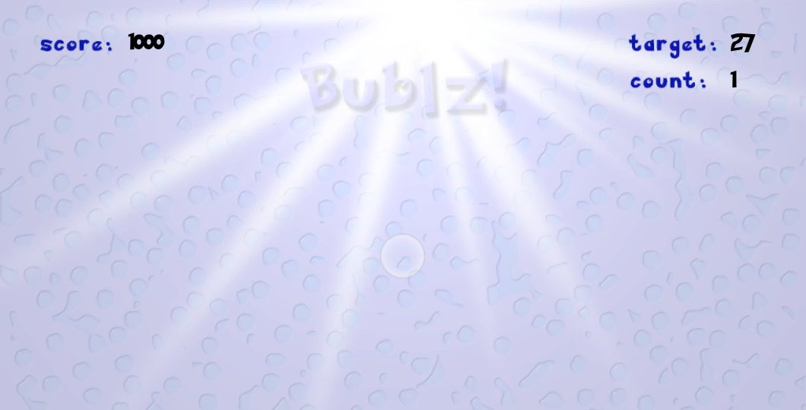

Introduction
Bublz! is a single-player game aimed at improving the calculation and reasoning abilities of players through practice.
The game was developed during a 15-day winter internship program in technology-supported education organized by Carnegie Mellon University in Bangalore during December 2013.
Mentors
Dr. Amy Ogan - Assistant Professor, Human-Computer Interaction Institute, Carnegie Mellon University
Dr. Erin Walker - Assistant Professor, School of Computing, Informatics, and Decision Systems Engineering, Arizona State University
Erik Harpstead - Ph.D. Student in Human-Computer Interaction, Carnegie Mellon University
Collaborators
Dhruv Chand
Mudit Sinha
Nisha KK
Shreya Sriram